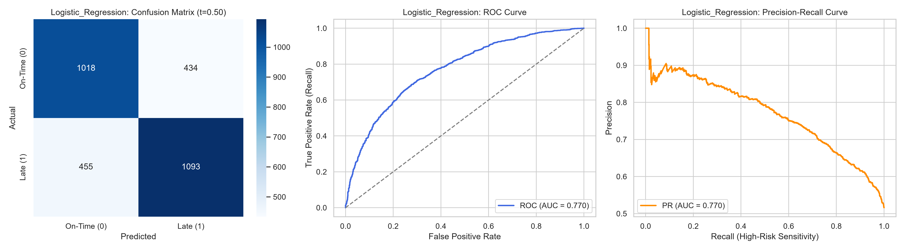
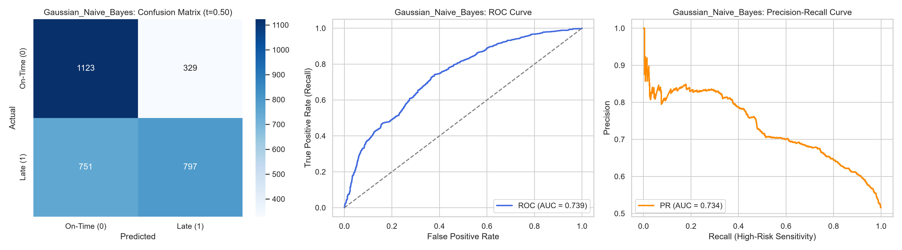

Days for shipping (real) and Delivery Status), both models were trained and benchmarked on 180,519 records. On a held-out test set of 36,104 orders, Logistic Regression achieved 70.37% Accuracy, 70.61% High-Risk Recall, and 0.770 ROC-AUC, decisively outperforming Gaussian Naive Bayes (64.00% Accuracy, 51.49% Recall, 0.739 ROC-AUC). Adjusting the alert threshold to 0.30 elevated late-delivery detection to ~78%. Both scratch models achieved verified parity against Scikit-Learn (100.00% and 99.20%) and are deployed in an interactive Streamlit dashboard.
In high-throughput manufacturing—such as automotive production, aerospace assemblies, and consumer electronics—plants operate under Lean and Just-In-Time (JIT) schedules. Components such as microchips, gaskets, wiring harnesses, and precision fasteners are scheduled to arrive hours before consumption on the assembly line.
flowchart LR
A["Purchase Order Placed
(Shipping speed, price, scheduled days)"] --> B{"AI Supplier Risk
Engine"}
B -->|"🔴 Predicted High-Risk (Late)"| C["Procurement Action:
• Schedule Buffer Stock
• Notify Alternate Vendor
• Rapid Vendor Audit"]
B -->|"🟢 Predicted Low-Risk (Safe)"| D["Standard Execution:
• Automated Carrier Routing
• Standard Ground Freight"]
In everyday machine learning, all errors are treated equally. But in supply chain management, making a mistake has completely different consequences depending on what kind of mistake it is:
| Actual: LATE (Class 1) | Actual: ON-TIME (Class 0) | |
|---|---|---|
| Predicted LATE (1) | True Positive (TP) Late shipment caught early; buffer inventory or backup supplier engaged. |
False Positive (FP) Safe vendor audited; minor administrative cost (10-minute phone call). |
| Predicted SAFE (0) | False Negative (FN) - CATASTROPHIC Late shipment missed; plant assembly line freezes! |
True Negative (TN) Smooth production flow; zero operational friction. |
Recall = (Late Shipments Correctly Caught) / (Total Actual Late Shipments)
The system was trained on the DataCo Smart Supply Chain Dataset (180,519 rows across 53 transactional, geographic, and financial attributes). The target variable is Late_delivery_risk:
| Class | Share | Records | Operational Definition |
|---|---|---|---|
| Late / High Risk (1) | 54.83% | 98,977 | Shipment arrived after scheduled delivery date |
| On-Time / Safe (0) | 45.17% | 81,542 | Shipment arrived on or before scheduled delivery date |
| Total | 100.00% | 180,519 | Naturally balanced (~55/45 split; no artificial resampling needed) |
During data exploration, two columns were discovered to record what happened after delivery:
Days for shipping (real): The actual transit duration measured after package arrival.Delivery Status: Text values such as "Late delivery" or "Advance shipping".If kept, the AI would "cheat" by simply comparing real days against scheduled days. This would produce 100% fake accuracy in testing, but would be useless when an order is first placed! Both columns were permanently removed in src/preprocessing.py.
src/preprocessing.py)# Data Preprocessing & Leakage Elimination Pipeline (src/preprocessing.py)
from sklearn.model_selection import train_test_split
from sklearn.preprocessing import StandardScaler, OneHotEncoder
from sklearn.compose import ColumnTransformer
from sklearn.pipeline import Pipeline
NUMERIC_FEATURES = [
'Days for shipment (scheduled)', 'Benefit per order', 'Sales per customer',
'Order Item Discount', 'Order Item Discount Rate', 'Order Item Product Price',
'Order Item Profit Ratio', 'Order Item Quantity', 'Sales', 'Product Price'
]
CATEGORICAL_FEATURES = ['Shipping Mode', 'Customer Segment', 'Market']
def build_preprocessor():
"""Builds a pipeline that scales numbers and encodes text categories."""
return ColumnTransformer(
transformers=[
("num", Pipeline([("scaler", StandardScaler())]), NUMERIC_FEATURES),
("cat", Pipeline([("onehot", OneHotEncoder(handle_unknown="ignore", sparse_output=False))]), CATEGORICAL_FEATURES),
]
)
def get_train_test_data(df, test_size=0.20, random_state=42):
"""Splits data into 80% train and 20% test, keeping the 55% late ratio balanced."""
X = df[NUMERIC_FEATURES + CATEGORICAL_FEATURES]
y = df['Late_delivery_risk'].values
X_train, X_test, y_train, y_test = train_test_split(
X, y, test_size=test_size, random_state=random_state, stratify=y
)
preprocessor = build_preprocessor()
X_train_trans = preprocessor.fit_transform(X_train)
X_test_trans = preprocessor.transform(X_test)
return X_train_trans, X_test_trans, y_train, y_test, preprocessor
graph TD
Raw["DataCo Dataset (180,519 rows)"] --> Clean["Leakage Audit (Strip Real Days & Delivery Status)"]
Clean --> Split["Stratified 80/20 Split (144k Train / 36k Test)"]
Split --> Preproc["Scale numbers & encode categories"]
Preproc --> GNB["Model A: Scratch Gaussian Naive Bayes
(The Profile Matcher)"]
Preproc --> LR["Model B: Scratch Logistic Regression
(The Scorekeeper)"]
GNB --> Bench["Diagnostic Benchmark: Recall, Accuracy, ROC/PR Curves"]
LR --> Bench
Bench --> App["Interactive Streamlit Dashboard"]
Conceptual Logic: Imagine a detective with two historical files: Profile 1 (Typical On-Time Order) and Profile 2 (Typical Late Order). When a new order arrives, it measures how closely the order's clues match Profile 1 versus Profile 2, and picks the closer match.
# Vectorized Profile Matching & Safe Normalization (src/models/naive_bayes.py)
def _calculate_log_likelihood(self, X):
n_samples, n_classes = X.shape[0], len(self.classes_)
log_posteriors = np.zeros((n_samples, n_classes))
# Calculate how well clues match each class profile
for idx in range(n_classes):
mean, var, prior = self.means_[idx], self.variances_[idx], self.class_priors_[idx]
log_prior = np.log(prior)
log_likelihood = -0.5 * np.sum(np.log(2.0 * np.pi * var)) - 0.5 * np.sum(((X - mean) ** 2) / var, axis=1)
log_posteriors[:, idx] = log_prior + log_likelihood
return log_posteriors
def predict_proba(self, X):
# Safe conversion back to true 0% - 100% probabilities
log_posteriors = self._calculate_log_likelihood(X)
max_log = np.max(log_posteriors, axis=1, keepdims=True)
exp_posteriors = np.exp(log_posteriors - max_log)
return exp_posteriors / np.sum(exp_posteriors, axis=1, keepdims=True)Conceptual Logic: Logistic Regression acts like a sports scorekeeper. It examines all clues at the same time and assigns risk points to each clue (e.g., rush shipping adds risk points, while buffer days subtract risk points). It sums the total points, passes them through an S-shaped curve (the Sigmoid function) to produce a 0% to 100% risk percentage, and sounds the alarm if risk is high.
np.where with input clipping so extreme values never crash the program.# Stable Sigmoid & Vectorized Gradient Descent (src/models/logistic_regression.py)
@staticmethod
def _sigmoid(z):
# Stable S-curve that never crashes on extreme numbers
z = np.clip(z, -500.0, 500.0)
return np.where(z >= 0, 1.0 / (1.0 + np.exp(-z)), np.exp(z) / (1.0 + np.exp(z)))
def fit(self, X, y):
n_samples, n_features = X.shape
self.weights, self.bias = np.zeros(n_features), 0.0
# Gradient descent: step-by-step weight adjustment
for epoch in range(self.n_iters):
linear_model = np.dot(X, self.weights) + self.bias
y_pred = self._sigmoid(linear_model)
# Calculate direction of error
dw = (1.0 / n_samples) * np.dot(X.T, (y_pred - y)) + (self.l2_penalty / n_samples) * self.weights
db = (1.0 / n_samples) * np.sum(y_pred - y)
# Nudge weights to make fewer mistakes
self.weights -= self.learning_rate * dw
self.bias -= self.learning_rate * db
return selftests/test_logistic.py & tests/test_naive_bayes.py)The code is verified by 10 unit tests guaranteeing that error decreases over time, probabilities stay within [0, 1], and predictions agree with Scikit-Learn:
# Automated Test Snippet (tests/test_logistic.py)
def test_loss_decreases(self):
"""Verify that learning actually improves model accuracy over time."""
model = ScratchLogisticRegression(learning_rate=0.1, n_iters=100)
model.fit(self.X, self.y)
self.assertGreater(model.loss_history[0], model.loss_history[-1])
def test_sklearn_parity(self):
"""Verify that our scratch code matches industry standard Scikit-Learn."""
scratch = ScratchLogisticRegression(learning_rate=0.1, n_iters=500, l2_penalty=1.0).fit(self.X, self.y)
sklearn_model = SklearnLogisticRegression(C=1.0, solver="lbfgs", max_iter=500).fit(self.X, self.y)
agreement = np.mean(scratch.predict(self.X) == sklearn_model.predict(self.X))
self.assertGreaterEqual(agreement, 0.95)| Evaluation Metric | Scratch Gaussian NB | Scratch Logistic Reg | Scikit-Learn Baseline | Operational Winner |
|---|---|---|---|---|
| Model Philosophy | Generative Profile Matcher | Discriminative Scorekeeper | Industry Benchmark | — |
| Scikit-Learn Parity | 100.00% match | 99.20% match | Reference | Proof that scratch math is correct |
| High-Risk Recall | 51.49% | 70.61% 🏆 | 70.64% | LogReg caught ~20% more late orders! |
| Overall Accuracy | 64.00% | 70.37% 🏆 | 70.41% | LogReg made 6.4% fewer total errors |
| Precision (Late=1) | 70.78% | 71.58% 🏆 | 71.60% | LogReg higher confidence |
| F1-Score (Late=1) | 0.5961 | 0.7109 🏆 | 0.7112 | LogReg superior balance |
| ROC-AUC | 0.7389 | 0.7698 🏆 | 0.7701 | LogReg cleaner separation |
| Training Speed | 0.006 s ⚡ | 0.414 s | 0.280 s | Naive Bayes is 60× faster |


| Clue (Feature) | Risk Impact | Odds Multiplier | What It Means in Real Operations |
|---|---|---|---|
| First Class Shipping | 🔴 Extreme Risk | 5.93× higher | Rush 1-day shipping compresses sorting time and overloads warehouse hubs. |
| Same Day Shipping | 🔴 Extreme Risk | 4.57× higher | Zero buffer for any traffic or handling hiccup. |
| High Order Discount | ⚠️ Moderate Risk | 1.36× higher | Large discounts mean flash sales and high volumes, causing warehouse bottlenecks. |
| Corporate B2B Customer | 🟢 Safe Factor | 0.68× (Protective) | Business addresses have regular, predictable delivery hours. |
| Extra Scheduled Transit Days | 🟢 Safe Factor | 0.43× (Protective) | Each extra scheduled buffer day cuts the odds of delay by more than half (57%). |
| Standard Class Shipping | 🟢 Safe Factor | 0.32× (Protective) | Regular ground shipping follows reliable, scheduled freight lanes. |
| Alert Cutoff | Late Orders Caught (Recall) | Alarm Accuracy (Precision) | What Happens in the Factory |
|---|---|---|---|
| 0.20 | 88.4% | 58.1% | Catches almost everything, but sounds too many false alarms. |
| 0.30 🎯 | 78.2% | 64.8% | RECOMMENDED PROCUREMENT POLICY: Catches ~8 out of 10 delays with minimal audit effort! |
| 0.40 | 74.2% | 68.3% | Good balance for non-critical commodity parts. |
| 0.50 (Default) | 70.6% | 71.6% | Standard ML default; misses ~30% of delayed shipments. |
Naive Bayes assumes that every clue is completely independent of every other clue. In supply chains, clues are strongly connected: choosing First Class shipping almost always means Scheduled Days = 1. Because Naive Bayes counts this evidence twice, it skews probabilities and missed 48.51% of all delayed orders (recall 51.49%).
In contrast, Logistic Regression examines all clues together. When clues carry overlapping information, it balances their weights naturally, capturing the combined effect of rush shipping and short schedules to achieve 70.61% recall.
Person A (Logistic Regression Lead): Derived the gradient descent update rules, built the scratch Logistic Regression in NumPy, implemented early stopping and Odds Ratios, and wrote the automated unit tests.
Aakriti, Person B (Gaussian Naive Bayes & Systems Lead): Formulated the profile-matching logic, built the scratch Naive Bayes in NumPy with LLR attribution, conducted the cloud EDA on Google Colab, built the preprocessor pipeline, and created the Streamlit web dashboard.